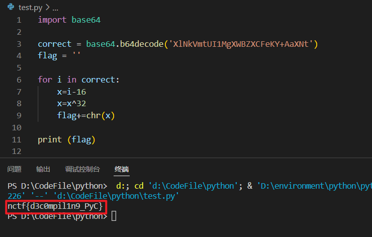
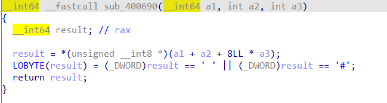

攻防世界Reverse——新手区
不全，那种一拖进去就出来的也没啥必要写
期末考试终于结束了😪
教我们海量数据挖掘的老师真是个傻杯💩💩💩
simple-unpack
一个很基础的加壳和脱壳的题目，算是对壳的初步理解。
-
使用 exeinfo pe 查看情况
说明加了 upx 的壳
-
使用 upx 脱壳
使用命令
upx -d 文件名进行脱壳，我没在 window 里安装 upx，直接用的 kali 里的 -
使用 ida 打开脱壳后的文件即得 flag
flag{Upx_1s_n0t_a_d3liv3r_c0mp4ny}
logemein
那 exeinfo pe 看了以下，gcc 类型的文件
尝试在 kali 里面运行了以下，效果如图所示
大概也是能猜出来，就是输入正确的字符串就能出 flag 或者输入的字符就是 flag。将文件放入 ida 中分析，找到主函数 main 进行分析
也能分析出来个大概，将输入的字符串和处理过后的 v8 字符串进行比较，所谓的处理就是异或，全部正确后才会执行 sub_40070f 函数
但是解题思路出现了问题，起先没有好好看这个判断的语句，一心只想着通过调试直接输出得到 flag，但这个 flag 其实是我们自己输入的…就挺搞笑的
接下来根据所给的条件写 exp 即可,网上找的对于中间那一块的 v7 转换不是很懂，最终这一串表达式所达到的效果是：v7 要转换为16进制然后在转换为字符串，而且字符是小端序，所以把得到的字符翻转然后和v8 的每一位进行异或。
1 |
|
尝试用 vs code 调试看看东西，但是无果
insanity
啥啊，这…文件一拖进去，看一下字符串就出来了
getit
这个是 linux 下的运行程序，自己也放到 kali 里面有跑过，知道 flag 在 /tmp/flag.txt，也有试过在文件夹里找过这个文件，但是找不到。
原因是这个给目录是 linux 中的临时文件夹，程序运行完后这个文件就被清理了。
解法一
用ida看了以下，反编译结果如图
大致就是建了个flag.txt文件，然后向里面写了flag，那第一个循环编写的应该就是向文件中编写的内容，但是有点看不明白向文件中写内容的时候这个 p[j] 的操作，好像干了什么但是不知道是啥，自己去试着写了 exp
1 |
|
但是出来结果一看就错了
原来没有意识到自己把 s2[] 给搞错了，原来这个是还要加上去的啊
怪不得自己最后出来的结果错了，就差一点点。
解法二
我的汇编内容梳理如下所示
如果进行跳转了的话那就会进行关闭文件的操作，所以jnb loc_4008B5 后面就是向文件中写内容，而语句mov eax, [rbp+var_3C] 应该就是获取字符串 t[ ] 的内容或者是地址，总之 flag 就位于这里。然后使用 ida 在 kali 里远程调试，断点就下在mov eax, [rbp+var_3C] 处，单步跳过后 dx 就指向了 t[ ] 处
python-trade
第一次遇到 .pyc 类型的文件，pyc是编译 py 之后产生的二进制文件
拖进 ida 里面也没有什么用，反编译不了哎，上网看了一下要下载专门反编译 pyc 的软件，叫做 uncompyle6，还有在线反编译的网站。
文件反编译的结果如下
1 | import base64 |
根据以上的程序逻辑进行解密的编写
1 | import base64 |
这里有一个坑点，我的猜测是可能是因为 python 版本的不同，所以有点出入。这个语句for i in correct 在我的这个 python 版本中运行完该程序后 i 的值就直接是 ascll 码的值了，因此不需要再用 ord( ) 函数进行转换。

no-string-attached
ida反编译一下，关注 authenticate( ) 函数
初步判断就是 decrypt( ) 这个函数对传入的这两个奇怪的字符串及进行了一些操作然后再进行比较输出结果，跟进 decrypt( ) 函数看一下
根据以上程序感觉是可以编写 exp 的，尝试了以下失败了😪
而且报错也很明显，就是输进去的串它不认识呗，除了自己写 exp 解出来目前为止我知道的剩下来的办法就是调试了，但是我的 kali 是64位的，这个程序是32位的，刚刚一直在32位的ida里面调试怪不得一直都连不上去，吐了
整个调试的过程可以说是非常的艰辛，最后把断点下在了此处
理由是 decrypt 函数刚执行完成，返回的 dest 的值应该正好储存在某个寄存器中，进行调试后也确实是发现了一点东西，eax 中储存了一个堆的地址
跟进去看了一下，以为这个是flag，但是错了
mad，要对自己无语了，没看清楚这个地址的起始位置，把上面的1也当成了 flag 的一部分了，醉了
最后得 flag：9447{you_are_an_international_mystery}
maze
拖进 ida 反汇编，进入主要 main 函数，分析发现是在循环中对输进去的字符串进行了比较，然后进行一系列操作。
具体的比较情况是，将输进去的字符串的从第6位开始及进行比较，分别有 ‘O’、‘o’、‘.’、‘0’ 这四种情况
不同的比较情况会触发不同的情况，但是最后都会走到 loc_4007BB 处继续执行程序。
那么图中 call 的函数应该就是关键了，跟进去看一下
所对应的反汇编代码如图，就是将取出的值和 20h 以及 23h 比较，如果都不相等那函数就返回 0，程序就会说这是错的 flag。

要取的东西就在字符串 asc_601060 中，如下图
将它转换为 8*8 的方正，就如下所示
1 | 20 20 2A 2A 2A 2A 2A 2A |
现在就和题目的提示——走迷宫对应上了，我们要从最开始的20开始一直走到23才算到了迷宫的出口。
取方正中的哪个字符就取决于我们输入的 flag 所触发的操作使传进去的参数 a2、a3 分别是什么，下图是 a2，a3 的传参，里面一个对应横坐标一个对应纵坐标
前面对 flag 的判断操作就是改变横纵坐标用的，那这四个应该就对应着上下左右
梳理
我们需要按照 8*8 的方正从 20 走到 23，通过我们的 flag 来决定是上下左右中的哪个方向。
通过 sub_400690 函数可以知道传参时所对应的横纵坐标
也知道了 r14 和 r15 的横纵坐标对应关系

下图就是上下左右对应关系：
- . 代表上
- 0 代表下
- O 代表左
- o 代表右
我们迷宫的路线是：右下右右下下左下下下右右右右上上左左
所以最后 flag：nctf{o0oo00O000oooo…OO}
一点感受
这到题目不能过于依赖 f5 反编译然后去看代码，因为反编译后的代码结构远没有上图来的清晰。
😞 还是自己太菜了。
本文作者：GhDemi
本文链接： https://ghdemi.github.io/2022/06/24/%E6%94%BB%E9%98%B2%E4%B8%96%E7%95%8CRe-wp/
文章默认使用 CC BY-NC-SA 4.0 协议进行许可，使用时请注意遵守协议。